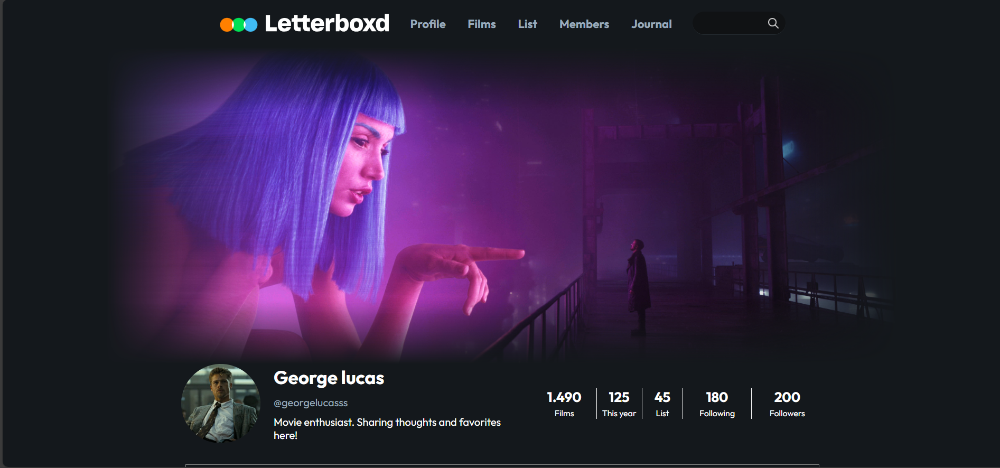
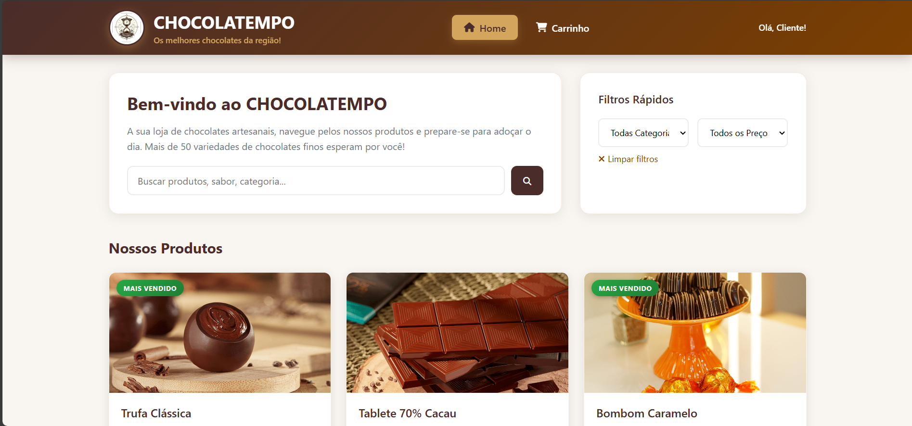

Sobre Mim
Olá! Sou George Lucas, um apaixonado
Desenvolvedor Frontend dedicado a criar
experiências web envolventes e interativas.
Com uma base sólida em
HTML,
CSS e
JavaScript, gosto de transformar ideias
em sites visualmente atraentes e
fáceis de usar.
Estou sempre disposto a aprender novas tecnologias
e a aperfeiçoar minhas habilidades para entregar
soluções de alta qualidade.
Vamos construir algo incrÃvel juntos!
Habilidades e Talentos
Gosto de criar layouts responsivos, interfaces interativas e experiências de usuário suaves. Meus pontos fortes incluem resolução de problemas, atenção aos detalhes e paixão por aprendizado contÃnuo em desenvolvimento frontend.
 HTML 5
HTML 5
 CSS 3
CSS 3
 JavaScript
JavaScript
 Git
Git
 Python
Python
Habilidade
Habilidade
Habilidade

Site com IA - NextIa
Uma plataforma web impulsionada por tecnologias de IA, projetada para fornecer experiências personalizadas.

Site de Login com IA
Uma plataforma de login segura que utiliza IA para melhorar a autenticação do usuário.

Clone do Letterboxd
Clone do Letterboxd feito com HTML, CSS e JavaScript.

Site Choco Tempo
Site de vendas de chocolates com design responsivo e animações em JavaScript.
Contato
Entre em contato
Se tiver dúvidas ou quiser falar comigo, fique à vontade para entrar em contato!